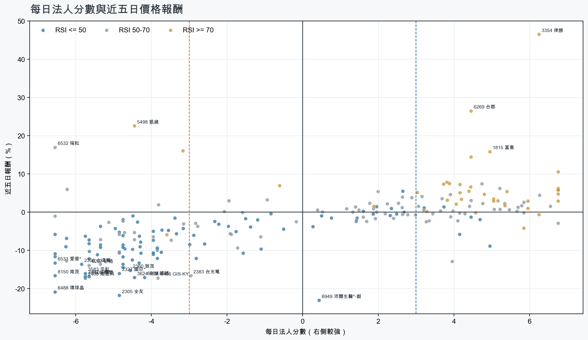
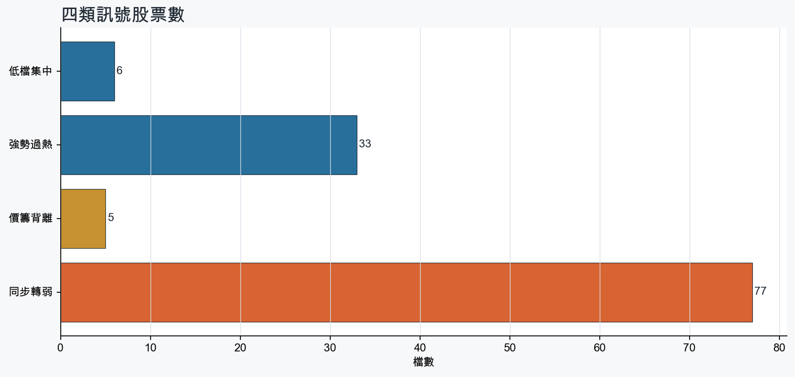
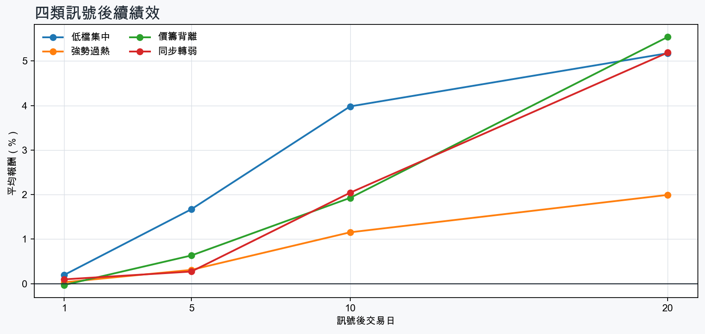

市場情緒偏空
近5日法人合計-9,753,172 張
篩選池上漲比例36.8%
籌碼好 / RSI低6 檔
籌碼差 / 價跌15 檔



EPS × PE VALUATION
法人常用的相對估值
顯示保守、基準與樂觀估值帶，不把單一數字包裝成精準目標價。
最新累計 EPS 依季數年化 × 同產業有效 P/E 的 Q25／中位數／Q75。排除本公司、非正 P/E，並以 1.5×IQR 排除離群值。估值帶是公開資料篩選值，不是法人目標價；未使用分析師預估 EPS。
MOOD × MONEY
情緒與籌碼雷達
熱度代表被討論程度；情緒分與法人方向分開計算。熱門不等於適合追價，樣本不足也不硬判多空。
| 股票 | 情緒 | 討論熱度 | 情緒 × 籌碼 | 情緒 × 基本面 |
|---|---|---|---|---|
| 2027 大成鋼強勢過熱 | 偏多 +22.6信心 62 | 1001 篇 / 77 留言 / 1 則新聞 | 情籌共振法人分 +6.8 | 基本面與情緒共振基本面分 +3.6 |
| 1815 富喬強勢過熱 | 情緒高漲 +58.5信心 81 | 971 篇 / 60 留言 / 3 則新聞 | 情籌共振法人分 +5.0 | 基本面與情緒共振基本面分 +3.6 |
| 2408 南亞科同步轉弱 | 偏空 -32.5信心 67 | 891 篇 / 38 留言 / 3 則新聞 | 情籌雙弱法人分 -5.8 | 基本面佳、情緒悲觀基本面分 +3.6 |
| 6278 台表科強勢過熱 | 偏多 +28.8信心 63 | 801 篇 / 20 留言 / 3 則新聞 | 情籌共振法人分 +6.8 | 基本面與情緒共振基本面分 +2.4 |
| 1216 統一強勢過熱 | 偏多 +25.9信心 49 | 751 篇 / 16 留言 / 2 則新聞 | 情籌共振法人分 +6.8 | 基本面與情緒共振基本面分 +1.8 |
| 6488 環球晶同步轉弱 | 中性分歧 +0.0信心 30 | 520 篇 / 0 留言 / 3 則新聞 | 情籌混合法人分 -6.5 | 基本面與情緒分歧基本面分 -0.1 |
| 6182 合晶同步轉弱 | 中性分歧 +0.0信心 30 | 520 篇 / 0 留言 / 3 則新聞 | 情籌混合法人分 -4.3 | 基本面與情緒分歧基本面分 +3.0 |
| 2327 國巨*同步轉弱 | 偏多 +29.7信心 30 | 520 篇 / 0 留言 / 3 則新聞 | 熱門但法人撤退法人分 -4.8 | 基本面與情緒共振基本面分 +3.6 |
| 2360 致茂同步轉弱 | 偏多 +29.7信心 30 | 520 篇 / 0 留言 / 3 則新聞 | 熱門但法人撤退法人分 -4.6 | 基本面與情緒共振基本面分 +3.6 |
| 3624 光頡同步轉弱 | 中性分歧 +0.0信心 30 | 520 篇 / 0 留言 / 3 則新聞 | 情籌混合法人分 -4.5 | 基本面與情緒分歧基本面分 +3.6 |
| 2308 台達電同步轉弱 | 中性分歧 +0.0信心 30 | 520 篇 / 0 留言 / 3 則新聞 | 情籌混合法人分 -5.8 | 基本面與情緒分歧基本面分 +3.6 |
| 6239 力成同步轉弱 | 偏空 -29.7信心 30 | 520 篇 / 0 留言 / 3 則新聞 | 情籌雙弱法人分 -4.8 | 基本面佳、情緒悲觀基本面分 +3.6 |
01
籌碼好 / RSI低
優先研究基本面；法人續買且價格止穩時，才適合分批觀察。
| 股票 / 確認狀態 | 每日法人分 | 浦男式近似 | 法人加速度 | RSI / 相對強弱 | 量價確認 | 融資融券 | 每週集保確認 | 基本面 | EPS × 同業 P/E 估值 | 情緒 / 情籌 | 近期消息 | 論壇討論 |
|---|---|---|---|---|---|---|---|---|---|---|---|---|
| 3702 大聯大等待確認 · 76 分籌碼有訊號，但價格尚未確認 | +4.5法人 +11,388 張 / 4 天 | 接近 · 79中期均線偏多；法人籌碼偏多；買超具延續性；留意未站月線、法人買盤未加速 | -7,698 張近3日 +2,568 / 連續 -1 日 | 43.2相對大盤 +5.9% | 量比 1.06確認分 -0.0收盤跌破20日線；法人買盤減速 | -%融資 - 張 / 融券 - 張 | +0.30 pp1000張 +0.40 pp | 單月營收年增 +146.5%；累計營收年增 +72.5%；2026 Q2 累計 EPS 8.422026 Q2 累計營益率 2.6%來源：公開資訊觀測站 | 基準 NT$ 211.2估值帶 169.2–371.3現價 114.5 · 低於估值帶 · 距基準 +84.4%2026 Q2 累計 EPS 8.42 → 年化 16.84電子通路同業 P/E 10.05／12.54／22.05 · n=31 · 信心中等以 Q2 累計 EPS 年化，不等同分析師全年預估來源：TWSE／TPEx 每日本益比 | 中性分歧 +0.0熱度 52 / 信心 30情籌混合 | 3702 大聯大- 高營收也帶小弟一起飛升160吧！ - 股市爆料同學會CMoney · 08/31大聯大9月營收攻頂飛越2,000億 大漲54% 單季站上5,079億經濟日報 · 10/13 | 近期沒有明確提及本股的論壇樣本 |
| 2845 遠東銀等待確認 · 85 分籌碼有訊號，但價格尚未確認 | +3.2法人 +16,798 張 / 4 天 | 接近 · 75站上月線；法人籌碼偏多；法人買盤加速；留意中期均線未翻多、明顯弱於大盤 | +6,983 張近3日 +13,323 / 連續 -1 日 | 50.0相對大盤 -4.3% | 量比 1.02確認分 +3.220日線低於60日線；近20日弱於大盤 | -%融資 - 張 / 融券 - 張 | -0.18 pp1000張 -0.39 pp | 單月營收年增 +14.0%；累計營收年增 +14.0%；2026 Q2 累計 EPS 0.54仍需觀察下一期財報延續性來源：公開資訊觀測站 | 基準 NT$ 14.21估值帶 7.43–17.38現價 13.30 · 估值帶內 · 距基準 +6.9%2026 Q2 累計 EPS 0.54 → 年化 1.08金融保險同業 P/E 6.88／13.16／16.09 · n=39 · 信心中等以 Q2 累計 EPS 年化，不等同分析師全年預估來源：TWSE／TPEx 每日本益比 | 樣本不足 +0.0熱度 31 / 信心 10情緒樣本不足 | 台股崩跌融資洗乾淨了？分析師揭「止穩3關鍵訊號」 點名台泥、寶成、遠東銀…10檔「黃金右下角」首選股- 上市櫃旺得富理財網 · 10/19 | 近期沒有明確提及本股的論壇樣本 |
| 2637 慧洋-KY等待確認 · 72 分籌碼有訊號，但價格尚未確認 | +4.7法人 +3,623 張 / 5 天 | 接近 · 73站上月線；中期均線偏多；法人籌碼偏多；留意法人買盤未加速、明顯弱於大盤 | -1,730 張近3日 +1,659 / 連續 +7 日 | 49.1相對大盤 -4.6% | 量比 0.73確認分 -1.4近20日弱於大盤；法人買盤減速 | -%融資 - 張 / 融券 - 張 | +0.16 pp1000張 +0.46 pp | 單月營收年增 +24.5%；累計營收年增 +33.8%；2026 Q2 累計 EPS 4.10仍需觀察下一期財報延續性來源：公開資訊觀測站 | 基準 NT$ 90.77估值帶 75.77–118.3現價 100.0 · 估值帶內 · 距基準 -9.2%2026 Q2 累計 EPS 4.10 → 年化 8.20航運業同業 P/E 9.24／11.07／14.43 · n=26 · 信心中等以 Q2 累計 EPS 年化，不等同分析師全年預估來源：TWSE／TPEx 每日本益比 | 偏多 +29.7熱度 52 / 信心 30情籌共振 | 【12:18 即時新聞】慧洋-KY(2637)股價走強，散裝行情與營收表現成盤中焦點CMoney投資網誌 · 10/13【12:56 即時新聞】慧洋-KY(2637)股價走強，散裝航運旺季題材受關注CMoney投資網誌 · 10/12 | 近期沒有明確提及本股的論壇樣本 |
| 6290 良維等待確認 · 67 分籌碼有訊號，但價格尚未確認 | +4.2法人 +3,475 張 / 3 天 | 接近 · 64中期均線偏多；法人籌碼偏多；買超具延續性；留意未站月線、法人買盤未加速 | -6,423 張近3日 -1,876 / 連續 +1 日 | 43.7相對大盤 -3.8% | 量比 1.01確認分 -2.5收盤跌破20日線；近20日弱於大盤；法人買盤減速 | +4.5%融資 +707 張 / 融券 +38 張 | +2.51 pp1000張 +0.60 pp | 單月營收年增 +15.7%；累計營收年增 +10.1%；2026 Q2 累計 EPS 4.50仍需觀察下一期財報延續性來源：公開資訊觀測站 | 基準 NT$ 242.2估值帶 160.7–403.8現價 259.5 · 估值帶內 · 距基準 -6.7%2026 Q2 累計 EPS 4.50 → 年化 9.00電子零組件同業 P/E 17.85／26.91／44.87 · n=148 · 信心中等以 Q2 累計 EPS 年化，不等同分析師全年預估來源：TWSE／TPEx 每日本益比 | 中性分歧 +0.0熱度 44 / 信心 20情籌混合 | 【09:54 即時新聞】良維(6290)亮燈漲停，AI與CSP題材買盤拉抬CMoney投資網誌 · 10/14良維9月營收10.59 億元TechNews 科技新報 · 10/08 | 近期沒有明確提及本股的論壇樣本 |
| 6271 同欣電等待確認 · 64 分籌碼有訊號，但價格尚未確認 | +5.0法人 +3,180 張 / 3 天 | 接近 · 58中期均線偏多；法人籌碼偏多；買超具延續性；留意未站月線、法人買盤未加速 | -2,650 張近3日 +450 / 連續 +1 日 | 46.5相對大盤 -3.2% | 量比 0.64確認分 -3.6收盤跌破20日線；近20日弱於大盤；成交量不足；法人買盤減速 | -%融資 - 張 / 融券 - 張 | +2.75 pp1000張 +1.85 pp | 單月營收年增 +22.1%；累計營收年增 +8.5%；2026 Q2 累計 EPS 4.37仍需觀察下一期財報延續性來源：公開資訊觀測站 | 基準 NT$ 228.0估值帶 147.4–397.0現價 225.5 · 估值帶內 · 距基準 +1.1%2026 Q2 累計 EPS 4.37 → 年化 8.74半導體同業 P/E 16.87／26.09／45.42 · n=148 · 信心中等以 Q2 累計 EPS 年化，不等同分析師全年預估來源：TWSE／TPEx 每日本益比 | 樣本不足 +0.0熱度 31 / 信心 10情緒樣本不足 | 【同欣電法說會重點內容備忘錄】未來展望趨勢 20260805富果直送 · 08/05 | 近期沒有明確提及本股的論壇樣本 |
| 9910 豐泰可研究 · 80 分籌碼與價格確認，可列研究清單 | +3.7法人 +4,391 張 / 5 天 | 接近 · 67站上月線；法人籌碼偏多；法人買盤加速；留意中期均線未翻多、相對強度普通 | +2,456 張近3日 +3,616 / 連續 +6 日 | 43.2相對大盤 -0.9% | 量比 1.35確認分 +2.820日線低於60日線 | -%融資 - 張 / 融券 - 張 | -0.22 pp1000張 -0.35 pp | 2026 Q2 累計 EPS 1.71單月營收年增 -4.8%；累計營收年增 -3.1%；2026 Q2 累計營益率 5.0%來源：公開資訊觀測站 | 基準 NT$ 40.49估值帶 32.76–49.45現價 68.30 · 高於估值帶 · 距基準 -40.7%2026 Q2 累計 EPS 1.71 → 年化 3.42運動休閒同業 P/E 9.58／11.84／14.46 · n=20 · 信心中等以 Q2 累計 EPS 年化，不等同分析師全年預估來源：TWSE／TPEx 每日本益比 | 中性分歧 -9.9熱度 52 / 信心 30情籌混合 | 《一週投信賣超6-6》豐泰(219)、巨大(199)、jpp-KY(196)富聯網 · 10/19《投信賣超6-6》光寶科(111)、豐泰(108)富聯網 · 10/19 | 近期沒有明確提及本股的論壇樣本 |
02
籌碼好 / RSI高
趨勢強但不追價，等待量縮、RSI降溫或回測支撐。
| 股票 / 確認狀態 | 每日法人分 | 浦男式近似 | 法人加速度 | RSI / 相對強弱 | 量價確認 | 融資融券 | 每週集保確認 | 基本面 | EPS × 同業 P/E 估值 | 情緒 / 情籌 | 近期消息 | 論壇討論 |
|---|---|---|---|---|---|---|---|---|---|---|---|---|
| 6278 台表科等待拉回 · 100 分等拉回，不追價 | +6.8法人 +25,116 張 / 5 天 | 接近 · 90站上月線；中期均線偏多；法人籌碼偏多；留意RSI過熱 | +3,239 張近3日 +16,765 / 連續 +10 日 | 79.9相對大盤 +56.1% | 量比 1.05確認分 +6.5價格、量能與籌碼未見明顯弱項 | -%融資 - 張 / 融券 - 張 | +11.71 pp1000張 +12.77 pp | 單月營收年增 +15.9%；累計營收年增 +6.5%；2026 Q2 累計 EPS 4.932026 Q2 累計營益率 6.0%來源：公開資訊觀測站 | 基準 NT$ 230.6估值帶 123.2–363.8現價 289.5 · 估值帶內 · 距基準 -20.3%2026 Q2 累計 EPS 4.93 → 年化 9.86光電同業 P/E 12.49／23.39／36.90 · n=68 · 信心中等以 Q2 累計 EPS 年化，不等同分析師全年預估來源：TWSE／TPEx 每日本益比 | 偏多 +28.8熱度 80 / 信心 63情籌共振 | 6278 台表科- 2026/10/16 利K賺選股方針- 股市爆料同學會CMoney · 10/15利空出盡噴出！台股開盤上攻200點12檔亮出漲停 「5檔上市個股」亮眼吸金台虹、台表科都入列Yahoo股市 · 10/14 | [情報] 6278 台表科 9月自結:1.31 年增:47.19%PTT Stock · 10-15 · 20 留言 |
| 2027 大成鋼等待拉回 · 100 分等拉回，不追價 | +6.8法人 +30,745 張 / 5 天 | 命中 · 96站上月線；中期均線偏多；法人籌碼偏多；留意動能位置非最佳 | +3,679 張近3日 +17,320 / 連續 +9 日 | 76.6相對大盤 +7.4% | 量比 0.97確認分 +6.1價格、量能與籌碼未見明顯弱項 | -%融資 - 張 / 融券 - 張 | +0.71 pp1000張 +0.54 pp | 單月營收年增 +41.1%；累計營收年增 +35.0%；2026 Q2 累計 EPS 3.10仍需觀察下一期財報延續性來源：公開資訊觀測站 | 基準 NT$ 78.00估值帶 65.35–96.97現價 51.00 · 低於估值帶 · 距基準 +52.9%2026 Q2 累計 EPS 3.10 → 年化 6.20鋼鐵工業同業 P/E 10.54／12.58／15.64 · n=27 · 信心中等以 Q2 累計 EPS 年化，不等同分析師全年預估來源：TWSE／TPEx 每日本益比 | 偏多 +22.6熱度 100 / 信心 62情籌共振 | 2027年高階玻纖布續缺 富喬擴產營運旺亮燈漲停經濟日報 · 10/19 | [新聞] IMF發布報告 預計中國經濟2027年進一步放PTT Stock · 10-17 · 77 留言 |
| 3265 台星科等待拉回 · 94 分等拉回，不追價 | +5.8法人 +3,740 張 / 4 天 | 接近 · 79站上月線；中期均線偏多；法人籌碼偏多；留意法人買盤未加速、量能異常 | -5,937 張近3日 +34 / 連續 -1 日 | 71.5相對大盤 +52.8% | 量比 0.58確認分 +0.6成交量不足；法人買盤減速；融資單日增幅偏高 | +6.1%融資 +245 張 / 融券 -13 張 | +6.50 pp1000張 +6.49 pp | 單月營收年增 +11.5%；累計營收年增 +15.9%；2026 Q2 累計 EPS 3.85仍需觀察下一期財報延續性來源：公開資訊觀測站 | 基準 NT$ 199.9估值帶 129.9–349.7現價 251.0 · 估值帶內 · 距基準 -20.4%2026 Q2 累計 EPS 3.85 → 年化 7.70半導體同業 P/E 16.87／25.96／45.42 · n=148 · 信心中等以 Q2 累計 EPS 年化，不等同分析師全年預估來源：TWSE／TPEx 每日本益比 | 樣本不足 +0.0熱度 0 / 信心 0情緒樣本不足 | 近期沒有通過股票語境篩選的新聞 | 近期沒有明確提及本股的論壇樣本 |
| 3034 聯詠等待拉回 · 100 分等拉回，不追價 | +6.8法人 +8,396 張 / 5 天 | 命中 · 96站上月線；中期均線偏多；法人籌碼偏多；留意動能位置非最佳 | +900 張近3日 +4,565 / 連續 +5 日 | 71.0相對大盤 +4.6% | 量比 1.40確認分 +5.5價格、量能與籌碼未見明顯弱項 | -%融資 - 張 / 融券 - 張 | +0.61 pp1000張 -0.49 pp | 單月營收年增 +25.0%；累計營收年增 +6.3%；2026 Q2 累計 EPS 16.59仍需觀察下一期財報延續性來源：公開資訊觀測站 | 基準 NT$ 865.7估值帶 559.8–1,507現價 585.0 · 估值帶內 · 距基準 +48.0%2026 Q2 累計 EPS 16.59 → 年化 33.18半導體同業 P/E 16.87／26.09／45.42 · n=148 · 信心中等以 Q2 累計 EPS 年化，不等同分析師全年預估來源：TWSE／TPEx 每日本益比 | 樣本不足 +0.0熱度 31 / 信心 10情緒樣本不足 | 3034 聯詠- 各產業龍頭股＆關注股10/19 收盤價更新｜ - 股市爆料同學會CMoney · 10/19 | 近期沒有明確提及本股的論壇樣本 |
| 6209 今國光等待拉回 · 100 分等拉回，不追價 | +4.5法人 +14,247 張 / 3 天 | 接近 · 85站上月線；中期均線偏多；法人籌碼偏多；留意量能尚未確認、RSI過熱 | +18,889 張近3日 +15,914 / 連續 -1 日 | 87.5相對大盤 +25.4% | 量比 2.71確認分 +5.8價格、量能與籌碼未見明顯弱項 | -%融資 - 張 / 融券 - 張 | +9.85 pp1000張 +10.39 pp | 單月營收年增 +81.6%；累計營收年增 +71.4%；2026 Q2 累計 EPS 1.53仍需觀察下一期財報延續性來源：公開資訊觀測站 | 基準 NT$ 71.57估值帶 38.22–108.3現價 102.0 · 估值帶內 · 距基準 -29.8%2026 Q2 累計 EPS 1.53 → 年化 3.06光電同業 P/E 12.49／23.39／35.41 · n=68 · 信心中等以 Q2 累計 EPS 年化，不等同分析師全年預估來源：TWSE／TPEx 每日本益比 | 中性分歧 +0.0熱度 44 / 信心 20情籌混合 | 焦點股》今國光：光學族群走弱 股價衝高後翻黑自由財經 · 10/19【11:53 即時新聞】今國光(6209)盤中走強，市場聚焦主力與法人買盤延續CMoney投資網誌 · 10/19 | 近期沒有明確提及本股的論壇樣本 |
| 8213 志超等待拉回 · 95 分等拉回，不追價 | +6.2法人 +3,351 張 / 5 天 | 命中 · 84站上月線；中期均線偏多；法人籌碼偏多；留意法人買盤未加速、量能尚未確認 | -1,223 張近3日 +1,343 / 連續 +10 日 | 71.8相對大盤 +17.6% | 量比 0.72確認分 +1.8法人買盤減速 | -%融資 - 張 / 融券 - 張 | +1.78 pp1000張 +2.80 pp | 單月營收年增 +50.6%；累計營收年增 +20.8%；2026 Q2 累計 EPS 0.932026 Q2 累計營益率 3.5%來源：公開資訊觀測站 | 基準 NT$ 51.02估值帶 33.20–83.46現價 38.90 · 估值帶內 · 距基準 +31.2%2026 Q2 累計 EPS 0.93 → 年化 1.86電子零組件同業 P/E 17.85／27.43／44.87 · n=148 · 信心中等以 Q2 累計 EPS 年化，不等同分析師全年預估來源：TWSE／TPEx 每日本益比 | 樣本不足 +0.0熱度 0 / 信心 0情緒樣本不足 | 近期沒有通過股票語境篩選的新聞 | 近期沒有明確提及本股的論壇樣本 |
| 1815 富喬等待拉回 · 100 分等拉回，不追價 | +5.0法人 +43,800 張 / 3 天 | 接近 · 85站上月線；中期均線偏多；法人籌碼偏多；留意量能尚未確認、RSI過熱 | +64,867 張近3日 +50,120 / 連續 +2 日 | 79.7相對大盤 +27.8% | 量比 2.73確認分 +6.3價格、量能與籌碼未見明顯弱項 | -4.9%融資 -2,316 張 / 融券 +1,124 張 | +1.25 pp1000張 +1.22 pp | 單月營收年增 +82.1%；累計營收年增 +54.9%；2026 Q2 累計 EPS 2.24仍需觀察下一期財報延續性來源：公開資訊觀測站 | 基準 NT$ 120.6估值帶 79.97–201.0現價 154.0 · 估值帶內 · 距基準 -21.7%2026 Q2 累計 EPS 2.24 → 年化 4.48電子零組件同業 P/E 17.85／26.91／44.87 · n=148 · 信心中等以 Q2 累計 EPS 年化，不等同分析師全年預估來源：TWSE／TPEx 每日本益比 | 情緒高漲 +58.5熱度 97 / 信心 81情籌共振 | 〈焦點股〉富喬泰國新廠動工 逆勢爆量攻漲停創天價鉅亨網 · 10/19富喬9月毛利率逼近52%：漲價與高階升級，獲利能走多遠？口袋證券 · 10/19 | [情報] 1815 富喬 9月自結:0.56 年增:273.33%PTT Stock · 10-16 · 60 留言 |
| 1216 統一等待拉回 · 100 分等拉回，不追價 | +6.8法人 +64,662 張 / 5 天 | 接近 · 82站上月線；法人籌碼偏多；法人買盤加速；留意中期均線未翻多、動能位置非最佳 | +18,148 張近3日 +44,204 / 連續 +9 日 | 77.4相對大盤 +4.7% | 量比 1.36確認分 +5.720日線低於60日線 | -%融資 - 張 / 融券 - 張 | +0.42 pp1000張 +0.41 pp | 單月營收年增 +5.8%；累計營收年增 +4.2%；2026 Q2 累計 EPS 2.562026 Q2 累計營益率 5.9%來源：公開資訊觀測站 | 基準 NT$ 78.90估值帶 62.67–98.20現價 79.60 · 估值帶內 · 距基準 -0.9%2026 Q2 累計 EPS 2.56 → 年化 5.12食品工業同業 P/E 12.24／15.41／19.18 · n=24 · 信心中等以 Q2 累計 EPS 年化，不等同分析師全年預估來源：TWSE／TPEx 每日本益比 | 偏多 +25.9熱度 75 / 信心 49情籌共振 | 三大法人買賣超 – 外資買超(2412)中華電、(1216)統一，投信買超(2330)台積電、(6274)台燿，法人合計賣超3700.76億元永豐金證券 · 10/19統一投信再度前進花蓮實現普惠金融 免費理財講座現正報名中UDN · 10/19 | Re: [新聞] 統一集團營收 三喜臨門PTT Stock · 10-15 · 16 留言 |
| 1476 儒鴻等待拉回 · 100 分等拉回，不追價 | +6.8法人 +3,302 張 / 5 天 | 接近 · 70站上月線；法人籌碼偏多；法人買盤加速；留意中期均線未翻多、量能異常 | +1,795 張近3日 +2,471 / 連續 +5 日 | 82.0相對大盤 +10.9% | 量比 0.59確認分 +5.220日線低於60日線；成交量不足 | -%融資 - 張 / 融券 - 張 | +0.43 pp1000張 +0.38 pp | 單月營收年增 +8.3%；累計營收年增 +5.4%；2026 Q2 累計 EPS 12.35仍需觀察下一期財報延續性來源：公開資訊觀測站 | 基準 NT$ 329.0估值帶 250.5–465.4現價 321.0 · 估值帶內 · 距基準 +2.5%2026 Q2 累計 EPS 12.35 → 年化 24.70紡織纖維同業 P/E 10.14／13.32／18.84 · n=34 · 信心中等以 Q2 累計 EPS 年化，不等同分析師全年預估來源：TWSE／TPEx 每日本益比 | 中性分歧 +9.9熱度 52 / 信心 30情籌混合 | 【1019台股盤後】台股下影線狂拉650點！外資轉買櫃買中小、投信持續買超，巴菲特護城河鎖定【聚陽】、【聯強】、【儒鴻】永豐金證券 · 10/19台股下影線狂拉650點！外資轉買櫃買中小、投信持續買超，巴菲特護城河鎖定#聚陽#聯強#儒鴻｜豐雲學堂2026 年 10 月永豐金證券 · 10/19 | 近期沒有明確提及本股的論壇樣本 |
| 1477 聚陽等待拉回 · 100 分等拉回，不追價 | +6.0法人 +4,868 張 / 5 天 | 接近 · 76站上月線；法人籌碼偏多；法人買盤加速；留意中期均線未翻多、量能異常 | +1,451 張近3日 +3,255 / 連續 +10 日 | 77.0相對大盤 +6.5% | 量比 0.65確認分 +4.820日線低於60日線；成交量不足 | -%融資 - 張 / 融券 - 張 | +0.49 pp1000張 -1.15 pp | 單月營收年增 +24.0%；累計營收年增 +0.2%；2026 Q2 累計 EPS 7.65仍需觀察下一期財報延續性來源：公開資訊觀測站 | 基準 NT$ 197.2估值帶 155.1–288.2現價 207.5 · 估值帶內 · 距基準 -5.0%2026 Q2 累計 EPS 7.65 → 年化 15.30紡織纖維同業 P/E 10.14／12.89／18.84 · n=34 · 信心中等以 Q2 累計 EPS 年化，不等同分析師全年預估來源：TWSE／TPEx 每日本益比 | 偏多 +29.7熱度 52 / 信心 30情籌共振 | 【1019台股盤後】台股下影線狂拉650點！外資轉買櫃買中小、投信持續買超，巴菲特護城河鎖定【聚陽】、【聯強】、【儒鴻】永豐金證券 · 10/19台股下影線狂拉650點！外資轉買櫃買中小、投信持續買超，巴菲特護城河鎖定#聚陽#聯強#儒鴻｜豐雲學堂2026 年 10 月永豐金證券 · 10/19 | 近期沒有明確提及本股的論壇樣本 |
| 2105 正新等待拉回 · 100 分等拉回，不追價 | +5.4法人 +27,996 張 / 5 天 | 接近 · 86站上月線；法人籌碼偏多；法人買盤加速；留意中期均線未翻多、動能位置非最佳 | +12,231 張近3日 +20,398 / 連續 +8 日 | 76.9相對大盤 +5.6% | 量比 1.67確認分 +5.920日線低於60日線 | -%融資 - 張 / 融券 - 張 | +0.42 pp1000張 +0.64 pp | 單月營收年增 +12.5%；累計營收年增 +6.6%；2026 Q2 累計 EPS 1.05仍需觀察下一期財報延續性來源：公開資訊觀測站 | 基準 NT$ 24.17估值帶 16.44–30.60現價 32.20 · 高於估值帶 · 距基準 -24.9%2026 Q2 累計 EPS 1.05 → 年化 2.10橡膠工業同業 P/E 7.83／11.51／14.57 · n=7 · 信心較低以 Q2 累計 EPS 年化，不等同分析師全年預估來源：TWSE／TPEx 每日本益比 | 樣本不足 +0.0熱度 0 / 信心 0情緒樣本不足 | 近期沒有通過股票語境篩選的新聞 | 近期沒有明確提及本股的論壇樣本 |
| 9904 寶成等待拉回 · 100 分等拉回，不追價 | +6.0法人 +45,653 張 / 5 天 | 命中 · 92站上月線；中期均線偏多；法人籌碼偏多；留意動能位置非最佳 | +895 張近3日 +28,512 / 連續 +9 日 | 72.3相對大盤 +5.6% | 量比 1.30確認分 +4.3價格、量能與籌碼未見明顯弱項 | -%融資 - 張 / 融券 - 張 | +1.36 pp1000張 +1.31 pp | 單月營收年增 +10.4%；2026 Q2 累計 EPS 2.37累計營收年增 -0.5%；2026 Q2 累計營益率 2.3%來源：公開資訊觀測站 | 基準 NT$ 59.44估值帶 50.67–69.58現價 26.40 · 低於估值帶 · 距基準 +125.2%2026 Q2 累計 EPS 2.37 → 年化 4.74運動休閒同業 P/E 10.69／12.54／14.68 · n=19 · 信心中等以 Q2 累計 EPS 年化，不等同分析師全年預估來源：TWSE／TPEx 每日本益比 | 偏空 -29.7熱度 52 / 信心 30法人布局、市場悲觀 | 台股崩跌融資洗乾淨了？分析師揭「止穩3關鍵訊號」 點名台泥、寶成、遠東銀…10檔「黃金右下角」首選股- 上市櫃旺得富理財網 · 10/19寶成(9904) 10/19 三大法人買賣超CMoney · 10/19 | 近期沒有明確提及本股的論壇樣本 |
| 4927 泰鼎-KY等待拉回 · 100 分等拉回，不追價 | +5.3法人 +9,172 張 / 4 天 | 接近 · 81站上月線；中期均線偏多；法人籌碼偏多；留意基本面偏弱、動能位置非最佳 | +335 張近3日 +4,903 / 連續 +1 日 | 77.7相對大盤 +36.1% | 量比 1.73確認分 +6.1價格、量能與籌碼未見明顯弱項 | -%融資 - 張 / 融券 - 張 | +9.01 pp1000張 +8.22 pp | 單月營收年增 +72.8%；累計營收年增 +9.7%2026 Q2 累計 EPS -5.46；2026 Q2 累計營益率 -22.8%來源：公開資訊觀測站 | 不適用年化 EPS 非正數，不適合使用本益比估值 | 偏多 +19.8熱度 44 / 信心 20情籌混合 | 4927 泰鼎-KY - 今晚21:00LIVE直播！60元頸線淬鍊大底『北伐二部曲』 - 股市爆料同學會CMoney · 10/19【11:23 即時新聞】泰鼎-KY(4927)盤中小漲，延續營收創高題材CMoney投資網誌 · 10/19 | 近期沒有明確提及本股的論壇樣本 |
| 4904 遠傳等待拉回 · 100 分等拉回，不追價 | +4.4法人 +15,267 張 / 5 天 | 命中 · 96站上月線；中期均線偏多；法人籌碼偏多；留意動能位置非最佳 | +6,060 張近3日 +10,724 / 連續 +9 日 | 70.6相對大盤 +5.0% | 量比 1.53確認分 +5.8價格、量能與籌碼未見明顯弱項 | -%融資 - 張 / 融券 - 張 | +0.24 pp1000張 +0.25 pp | 單月營收年增 +8.7%；累計營收年增 +11.0%；2026 Q2 累計 EPS 2.14仍需觀察下一期財報延續性來源：公開資訊觀測站 | 基準 NT$ 96.60估值帶 62.23–184.4現價 112.5 · 估值帶內 · 距基準 -14.1%2026 Q2 累計 EPS 2.14 → 年化 4.28通信網路同業 P/E 14.54／22.57／43.09 · n=59 · 信心中等以 Q2 累計 EPS 年化，不等同分析師全年預估來源：TWSE／TPEx 每日本益比 | 中性分歧 +0.0熱度 52 / 信心 30情籌混合 | 台股跌跌不休中華電、台灣大…電信3雄反創新高回測100萬存遠傳或0050？少賺600萬捶心肝- 基金旺得富理財網 · 10/194904 遠傳- 【00985A】10/19 操作日報｜棄守防禦股，急拉景碩與華邦電- 股市爆料同學會CMoney · 10/19 | 近期沒有明確提及本股的論壇樣本 |
| 4938 和碩等待拉回 · 92 分等拉回，不追價 | +5.0法人 +27,277 張 / 4 天 | 命中 · 89站上月線；中期均線偏多；法人籌碼偏多；留意法人買盤未加速、動能位置非最佳 | -21,624 張近3日 +10,126 / 連續 +2 日 | 70.5相對大盤 +12.5% | 量比 1.01確認分 +2.5法人買盤減速 | -%融資 - 張 / 融券 - 張 | +0.60 pp1000張 +0.72 pp | 單月營收年增 +86.9%；累計營收年增 +13.8%；2026 Q2 累計 EPS 2.262026 Q2 累計營益率 1.4%來源：公開資訊觀測站 | 基準 NT$ 79.42估值帶 56.41–111.5現價 102.0 · 估值帶內 · 距基準 -22.1%2026 Q2 累計 EPS 2.26 → 年化 4.52電腦及週邊同業 P/E 12.48／17.57／24.66 · n=80 · 信心中等以 Q2 累計 EPS 年化，不等同分析師全年預估來源：TWSE／TPEx 每日本益比 | 中性分歧 +0.0熱度 52 / 信心 30情籌混合 | 和碩績優爆量漲停！AI 伺服器、SSD 布局受矚 還有小金雞月底掛牌經濟日報 · 10/17TWA00 加權指數- AI需求爆發！大量與和碩第三季營收齊創新高- 股市爆料同學會CMoney · 10/18 | 近期沒有明確提及本股的論壇樣本 |
03
籌碼差 / 股價上漲
可能是事件行情或軋空；沒有籌碼改善前避免追高。
| 股票 / 確認狀態 | 每日法人分 | 浦男式近似 | 法人加速度 | RSI / 相對強弱 | 量價確認 | 融資融券 | 每週集保確認 | 基本面 | EPS × 同業 P/E 估值 | 情緒 / 情籌 | 近期消息 | 論壇討論 |
|---|---|---|---|---|---|---|---|---|---|---|---|---|
| 5498 凱崴風險警示 · 44 分背離警戒，避免追高 | -4.5法人 -2,459 張 / 2 天 | 未命中 · 55站上月線；中期均線偏多；明顯強於大盤；留意法人籌碼偏弱、法人買盤未加速 | -3,077 張近3日 -2,796 / 連續 -3 日 | 78.2相對大盤 +27.2% | 量比 8.91確認分 +0.8法人買盤減速；融資單日增幅偏高 | +11.6%融資 +632 張 / 融券 +62 張 | +0.17 pp1000張 -0.57 pp | 單月營收年增 +78.7%；累計營收年增 +71.8%；2026 Q2 累計 EPS 0.182026 Q2 累計營益率 6.4%來源：公開資訊觀測站 | 基準 NT$ 9.80估值帶 6.44–16.15現價 65.70 · 高於估值帶 · 距基準 -85.1%2026 Q2 累計 EPS 0.18 → 年化 0.36電子零組件同業 P/E 17.90／27.21／44.87 · n=149 · 信心中等以 Q2 累計 EPS 年化，不等同分析師全年預估來源：TWSE／TPEx 每日本益比 | 偏多 +29.7熱度 52 / 信心 30熱門但法人撤退 | 今日漲停股｜台股開低收斂跌幅，電子零組件與PCB族群逆勢亮眼，富喬、凱崴、科嶠強勢漲停 1019永豐金證券 · 10/195498 凱崴- 【今日盤後速報】富喬泰國新廠動工！玻纖布與PCB材料同步轉強，誰有營收支撐？ - 股市爆料同學會CMoney · 10/19 | 近期沒有明確提及本股的論壇樣本 |
| 6532 瑞耘風險警示 · 48 分背離警戒，避免追高 | -6.5法人 -1,742 張 / 0 天 | 接近 · 75站上月線；中期均線偏多；明顯強於大盤；留意法人籌碼偏弱、法人買盤未加速 | -1,218 張近3日 -1,424 / 連續 -5 日 | 65.6相對大盤 +32.7% | 量比 1.59確認分 +2.5法人買盤減速 | +4.7%融資 +246 張 / 融券 +7 張 | +3.93 pp1000張 +0.00 pp | 單月營收年增 +60.6%；累計營收年增 +19.5%；2026 Q2 累計 EPS 2.01仍需觀察下一期財報延續性來源：公開資訊觀測站 | 基準 NT$ 104.9估值帶 67.98–182.6現價 124.0 · 估值帶內 · 距基準 -15.4%2026 Q2 累計 EPS 2.01 → 年化 4.02半導體同業 P/E 16.91／26.09／45.42 · n=148 · 信心較低以 Q2 累計 EPS 年化，不等同分析師全年預估；年化 EPS 為交易所近四季 EPS 的 0.50 倍，需保守解讀來源：TWSE／TPEx 每日本益比 | 偏多 +29.7熱度 52 / 信心 30熱門但法人撤退 | 半導體全倒下！「這檔」訂單旺到2028年今再跌2.46% 聖暉*、志聖挫逾4%、瑞耘跌4.88%為最多FTNN 新聞網 · 10/19【11:59 即時新聞】瑞耘(6532)盤中走強，市場聚焦法人籌碼變化CMoney投資網誌 · 10/19 | 近期沒有明確提及本股的論壇樣本 |
| 4960 誠美材風險警示 · 34 分背離警戒，避免追高 | -3.2法人 -2,596 張 / 1 天 | 未命中 · 51站上月線；中期均線偏多；明顯強於大盤；留意法人籌碼偏弱、法人買盤未加速 | -3,515 張近3日 -2,843 / 連續 -3 日 | 75.1相對大盤 +36.9% | 量比 2.82確認分 +1.8法人買盤減速 | -%融資 - 張 / 融券 - 張 | -1.25 pp1000張 -0.89 pp | 尚無明確成長訊號單月營收年增 -14.9%；累計營收年增 -10.3%；2026 Q2 累計 EPS -0.60來源：公開資訊觀測站 | 不適用年化 EPS 非正數，不適合使用本益比估值 | 偏空 -29.7熱度 52 / 信心 30情籌雙弱 | 今日最夯股／誠美材量增衝漲停 市場看到什麼利多？ | 市場焦點 | 證券經濟日報 · 10/19光電股綠中帶紅！「這光學廠」重摔至跌停、玉晶光跌3.69% 誠美材逆風亮紅燈、冠西電噴近7%FTNN 新聞網 · 10/19 | 近期沒有明確提及本股的論壇樣本 |
| 6153 嘉聯益風險警示 · 32 分背離警戒，避免追高 | -6.2法人 -6,325 張 / 0 天 | 接近 · 60站上月線；中期均線偏多；明顯強於大盤；留意法人籌碼偏弱、法人買盤未加速 | -6,096 張近3日 -5,895 / 連續 -5 日 | 59.6相對大盤 +6.3% | 量比 1.99確認分 +2.1法人買盤減速 | -%融資 - 張 / 融券 - 張 | +0.36 pp1000張 +0.28 pp | 單月營收年增 +0.8%；累計營收年增 +4.7%2026 Q2 累計 EPS -0.86；2026 Q2 累計營益率 -24.2%來源：公開資訊觀測站 | 不適用年化 EPS 非正數，不適合使用本益比估值 | 樣本不足 +0.0熱度 31 / 信心 10情緒樣本不足 | 【09:35 即時新聞】嘉聯益(6153)亮燈漲停，蘋果折疊機供應鏈題材受關注CMoney投資網誌 · 10/16 | 近期沒有明確提及本股的論壇樣本 |
| 2312 金寶風險警示 · 42 分背離警戒，避免追高 | -3.8法人 -11,520 張 / 2 天 | 未命中 · 55站上月線；相對大盤偏強；基本面有支撐；留意中期均線未翻多、法人籌碼偏弱 | -34,330 張近3日 -21,393 / 連續 -1 日 | 57.5相對大盤 +1.4% | 量比 2.87確認分 +0.120日線低於60日線；法人買盤減速 | -%融資 - 張 / 融券 - 張 | +0.23 pp1000張 +0.19 pp | 單月營收年增 +13.4%；累計營收年增 +5.1%；2026 Q2 累計 EPS 0.702026 Q2 累計營益率 2.8%來源：公開資訊觀測站 | 基準 NT$ 28.83估值帶 20.36–47.49現價 32.05 · 估值帶內 · 距基準 -10.1%2026 Q2 累計 EPS 0.70 → 年化 1.40其他電子同業 P/E 14.54／20.59／33.92 · n=66 · 信心中等以 Q2 累計 EPS 年化，不等同分析師全年預估來源：TWSE／TPEx 每日本益比 | 偏多 +29.7熱度 52 / 信心 30熱門但法人撤退 | 焦點股》金寶：營收創單月新高 帶量上攻自由財經 · 10/149105 泰金寶-DR - 今日外資買超第三名！！ 資料來源：https://jelly... - 股市爆料同學會CMoney · 10/19 | 近期沒有明確提及本股的論壇樣本 |
04
籌碼差 / 股價下跌
籌碼與價格同弱，原則上迴避，等待法人與大戶同時回補。
| 股票 / 確認狀態 | 每日法人分 | 浦男式近似 | 法人加速度 | RSI / 相對強弱 | 量價確認 | 融資融券 | 每週集保確認 | 基本面 | EPS × 同業 P/E 估值 | 情緒 / 情籌 | 近期消息 | 論壇討論 |
|---|---|---|---|---|---|---|---|---|---|---|---|---|
| 2305 全友風險警示 · 56 分迴避，等待籌碼翻正 | -4.8法人 -6,872 張 / 1 天 | 接近 · 68中期均線偏多；法人買盤加速；明顯強於大盤；留意未站月線、法人籌碼偏弱 | +7,800 張近3日 -325 / 連續 -2 日 | 42.1相對大盤 +10.4% | 量比 0.95確認分 +4.5收盤跌破20日線 | -%融資 - 張 / 融券 - 張 | -4.41 pp1000張 -1.37 pp | 單月營收年增 +212.8%；累計營收年增 +125.1%；2026 Q2 累計 EPS 0.51仍需觀察下一期財報延續性來源：公開資訊觀測站 | 基準 NT$ 17.54估值帶 12.59–23.48現價 55.60 · 高於估值帶 · 距基準 -68.5%2026 Q2 累計 EPS 0.51 → 年化 1.02電腦及週邊同業 P/E 12.34／17.20／23.02 · n=79 · 信心中等以 Q2 累計 EPS 年化，不等同分析師全年預估來源：TWSE／TPEx 每日本益比 | 樣本不足 +0.0熱度 0 / 信心 0情緒樣本不足 | 近期沒有通過股票語境篩選的新聞 | 近期沒有明確提及本股的論壇樣本 |
| 6488 環球晶風險警示 · 0 分迴避，等待籌碼翻正 | -6.5法人 -11,422 張 / 0 天 | 未命中 · 26中期均線偏多；流動性足夠；留意未站月線、法人籌碼偏弱 | -2,751 張近3日 -7,072 / 連續 -5 日 | 44.8相對大盤 -8.0% | 量比 0.86確認分 -5.8收盤跌破20日線；近20日弱於大盤；法人買盤減速 | -0.1%融資 -8 張 / 融券 -13 張 | +0.30 pp1000張 +1.02 pp | 2026 Q2 累計 EPS 11.87；2026 Q2 累計營益率 9.9%單月營收年增 -13.1%；累計營收年增 -4.4%來源：公開資訊觀測站 | 基準 NT$ 616.3估值帶 400.5–1,078現價 882.0 · 估值帶內 · 距基準 -30.1%2026 Q2 累計 EPS 11.87 → 年化 23.74半導體同業 P/E 16.87／25.96／45.42 · n=148 · 信心中等以 Q2 累計 EPS 年化，不等同分析師全年預估來源：TWSE／TPEx 每日本益比 | 中性分歧 +0.0熱度 52 / 信心 30情籌混合 | 5483 中美晶- 《 環球晶打國際盃台勝科拚籌碼！五年股價比值為何失衡？》 - 股市爆料同學會CMoney · 10/166488 環球晶- AI - 股市爆料同學會CMoney · 10/17 | 近期沒有明確提及本股的論壇樣本 |
| 2408 南亞科風險警示 · 25 分迴避，等待籌碼翻正 | -5.8法人 -107,360 張 / 0 天 | 未命中 · 42中期均線偏多；法人買盤加速；基本面有支撐；留意未站月線、法人籌碼偏弱 | +36,939 張近3日 -36,390 / 連續 -6 日 | 30.6相對大盤 -13.6% | 量比 0.87確認分 -1.8收盤跌破20日線；近20日弱於大盤 | -%融資 - 張 / 融券 - 張 | -1.24 pp1000張 -1.16 pp | 單月營收年增 +576.6%；累計營收年增 +626.9%；2026 Q2 累計 EPS 23.38仍需觀察下一期財報延續性來源：公開資訊觀測站 | 基準 NT$ 1,220估值帶 788.8–2,124現價 436.0 · 低於估值帶 · 距基準 +179.8%2026 Q2 累計 EPS 23.38 → 年化 46.76半導體同業 P/E 16.87／26.09／45.42 · n=148 · 信心中等以 Q2 累計 EPS 年化，不等同分析師全年預估來源：TWSE／TPEx 每日本益比 | 偏空 -32.5熱度 89 / 信心 67情籌雙弱 | 【零股排行榜】 盤中零股成交量TOP 20｜0050 元大台灣50、2330 台積電、2408 南亞科、009816 凱基台灣TOP50、00406A 主動中信台灣收益(1013)｜豐雲學堂2026 年 10 月永豐金證券 · 10/19外資9天狂砍7,585億、央行罕見出手！台積電急拉救盤，廣達、華邦電、南亞科臉綠理財周刊 · 10/19 | [情報] 2323 中環 買聯亞,國巨,光聖,賣南亞科賠PTT Stock · 10-16 · 38 留言 |
| 2467 志聖風險警示 · 5 分迴避，等待籌碼翻正 | -5.8法人 -1,893 張 / 0 天 | 未命中 · 31基本面有支撐；流動性足夠；留意未站月線、中期均線未翻多 | -1,112 張近3日 -989 / 連續 -5 日 | 41.5相對大盤 -7.5% | 量比 0.89確認分 -5.6收盤跌破20日線；20日線低於60日線；近20日弱於大盤；法人買盤減速 | -%融資 - 張 / 融券 - 張 | -0.98 pp1000張 -1.72 pp | 單月營收年增 +90.6%；累計營收年增 +84.2%；2026 Q2 累計 EPS 7.16仍需觀察下一期財報延續性來源：公開資訊觀測站 | 基準 NT$ 385.4估值帶 255.6–640.1現價 491.0 · 估值帶內 · 距基準 -21.5%2026 Q2 累計 EPS 7.16 → 年化 14.32電子零組件同業 P/E 17.85／26.91／44.70 · n=148 · 信心中等以 Q2 累計 EPS 年化，不等同分析師全年預估來源：TWSE／TPEx 每日本益比 | 中性分歧 +0.0熱度 44 / 信心 20情籌混合 | 2467 志聖- AI 推升高階載板設備需求志聖攜G2C+聯盟 TPCA 展新品- 股市爆料同學會CMoney · 10/192467 志聖- AI推升高階載板設備需求志聖攜G2C+聯盟亮相TPCA展 - 股市爆料同學會CMoney · 10/19 | 近期沒有明確提及本股的論壇樣本 |
| 3583 辛耘風險警示 · 2 分迴避，等待籌碼翻正 | -5.8法人 -1,701 張 / 0 天 | 未命中 · 31基本面有支撐；流動性足夠；留意未站月線、中期均線未翻多 | -417 張近3日 -950 / 連續 -5 日 | 36.9相對大盤 -7.6% | 量比 0.82確認分 -5.7收盤跌破20日線；20日線低於60日線；近20日弱於大盤；法人買盤減速 | -%融資 - 張 / 融券 - 張 | -0.86 pp1000張 -2.41 pp | 單月營收年增 +2.8%；累計營收年增 +7.5%；2026 Q2 累計 EPS 9.16仍需觀察下一期財報延續性來源：公開資訊觀測站 | 基準 NT$ 475.6估值帶 309.1–832.1現價 634.0 · 估值帶內 · 距基準 -25.0%2026 Q2 累計 EPS 9.16 → 年化 18.32半導體同業 P/E 16.87／25.96／45.42 · n=148 · 信心中等以 Q2 累計 EPS 年化，不等同分析師全年預估來源：TWSE／TPEx 每日本益比 | 樣本不足 +0.0熱度 0 / 信心 0情緒樣本不足 | 近期沒有通過股票語境篩選的新聞 | 近期沒有明確提及本股的論壇樣本 |
| 3450 聯鈞風險警示 · 23 分迴避，等待籌碼翻正 | -4.8法人 -3,313 張 / 2 天 | 未命中 · 42中期均線偏多；法人買盤加速；基本面有支撐；留意未站月線、法人籌碼偏弱 | +855 張近3日 -1,545 / 連續 +1 日 | 34.4相對大盤 -20.1% | 量比 0.67確認分 -1.8收盤跌破20日線；近20日弱於大盤 | -%融資 - 張 / 融券 - 張 | -8.76 pp1000張 -8.00 pp | 單月營收年增 +99.8%；累計營收年增 +36.5%；2026 Q2 累計 EPS 2.78仍需觀察下一期財報延續性來源：公開資訊觀測站 | 基準 NT$ 143.9估值帶 93.69–248.7現價 444.0 · 高於估值帶 · 距基準 -67.6%2026 Q2 累計 EPS 2.78 → 年化 5.56半導體同業 P/E 16.85／25.89／44.73 · n=147 · 信心中等以 Q2 累計 EPS 年化，不等同分析師全年預估來源：TWSE／TPEx 每日本益比 | 樣本不足 +0.0熱度 0 / 信心 0情緒樣本不足 | 近期沒有通過股票語境篩選的新聞 | 近期沒有明確提及本股的論壇樣本 |
| 6182 合晶風險警示 · 2 分迴避，等待籌碼翻正 | -4.3法人 -5,719 張 / 2 天 | 未命中 · 36中期均線偏多；基本面有支撐；流動性足夠；留意未站月線、法人籌碼偏弱 | -1,501 張近3日 -4,732 / 連續 +1 日 | 40.6相對大盤 -6.1% | 量比 0.29確認分 -5.9收盤跌破20日線；近20日弱於大盤；成交量不足；法人買盤減速 | -1.1%融資 -706 張 / 融券 +754 張 | -4.75 pp1000張 -5.43 pp | 單月營收年增 +13.5%；累計營收年增 +12.0%；2026 Q2 累計 EPS 0.062026 Q2 累計營益率 2.3%來源：公開資訊觀測站 | 基準 NT$ 3.12估值帶 2.02–5.40現價 107.5 · 高於估值帶 · 距基準 -97.1%2026 Q2 累計 EPS 0.06 → 年化 0.12半導體同業 P/E 16.87／25.96／45.02 · n=148 · 信心中等以 Q2 累計 EPS 年化，不等同分析師全年預估來源：TWSE／TPEx 每日本益比 | 中性分歧 +0.0熱度 52 / 信心 30情籌混合 | 6182 合晶 - 收平盤嗎😜 - 股市爆料同學會CMoney · 10/196182 合晶 - 10/19 外資 3,225張 投信 267張 自營商 -2... - 股市爆料同學會CMoney · 10/19 | 近期沒有明確提及本股的論壇樣本 |
| 2327 國巨*風險警示 · 21 分迴避，等待籌碼翻正 | -4.8法人 -42,715 張 / 1 天 | 未命中 · 50中期均線偏多；量價健康；基本面有支撐；留意未站月線、法人籌碼偏弱 | -28,438 張近3日 -35,062 / 連續 -3 日 | 42.4相對大盤 -2.5% | 量比 1.05確認分 -3.6收盤跌破20日線；法人買盤減速 | -%融資 - 張 / 融券 - 張 | -0.37 pp1000張 -0.92 pp | 單月營收年增 +46.1%；累計營收年增 +36.3%；2026 Q2 累計 EPS 8.48仍需觀察下一期財報延續性來源：公開資訊觀測站 | 基準 NT$ 456.4估值帶 302.7–761.0現價 534.0 · 估值帶內 · 距基準 -14.5%2026 Q2 累計 EPS 8.48 → 年化 16.96電子零組件同業 P/E 17.85／26.91／44.87 · n=148 · 信心中等以 Q2 累計 EPS 年化，不等同分析師全年預估來源：TWSE／TPEx 每日本益比 | 偏多 +29.7熱度 52 / 信心 30熱門但法人撤退 | 2327 國巨* - 今天太多笨蛋搶便宜，明天會補跌☄️🐷 - 股市爆料同學會CMoney · 10/192327 國巨* - 哲哲晚上60秒，心情💢應該不好受～～ 小暴龍分享被動元件... - 股市爆料同學會CMoney · 10/19 | 近期沒有明確提及本股的論壇樣本 |
| 6531 愛普*風險警示 · 26 分迴避，等待籌碼翻正 | -6.5法人 -5,230 張 / 0 天 | 未命中 · 47中期均線偏多；法人買盤加速；量價健康；留意未站月線、法人籌碼偏弱 | +2,638 張近3日 -2,158 / 連續 -10 日 | 33.8相對大盤 -15.6% | 量比 1.06確認分 -1.0收盤跌破20日線；近20日弱於大盤 | -%融資 - 張 / 融券 - 張 | -0.72 pp1000張 -0.79 pp | 單月營收年增 +90.2%；累計營收年增 +106.0%；2026 Q2 累計 EPS 8.33仍需觀察下一期財報延續性來源：公開資訊觀測站 | 基準 NT$ 432.5估值帶 281.1–750.0現價 821.0 · 高於估值帶 · 距基準 -47.3%2026 Q2 累計 EPS 8.33 → 年化 16.66半導體同業 P/E 16.87／25.96／45.02 · n=148 · 信心中等以 Q2 累計 EPS 年化，不等同分析師全年預估來源：TWSE／TPEx 每日本益比 | 樣本不足 -9.9熱度 31 / 信心 10情緒樣本不足 | 6531 愛普* - 買賣超- 股市爆料同學會CMoney · 10/19 | 近期沒有明確提及本股的論壇樣本 |
| 2360 致茂風險警示 · 14 分迴避，等待籌碼翻正 | -4.6法人 -2,985 張 / 0 天 | 未命中 · 41中期均線偏多；基本面有支撐；流動性足夠；留意未站月線、法人籌碼偏弱 | -1,131 張近3日 -2,114 / 連續 -7 日 | 36.9相對大盤 -6.2% | 量比 0.79確認分 -5.3收盤跌破20日線；近20日弱於大盤；法人買盤減速 | -%融資 - 張 / 融券 - 張 | +0.55 pp1000張 -0.79 pp | 單月營收年增 +206.5%；累計營收年增 +119.5%；2026 Q2 累計 EPS 21.27仍需觀察下一期財報延續性來源：公開資訊觀測站 | 基準 NT$ 872.9估值帶 618.1–1,354現價 2,005 · 高於估值帶 · 距基準 -56.5%2026 Q2 累計 EPS 21.27 → 年化 42.54其他電子同業 P/E 14.53／20.52／31.83 · n=65 · 信心中等以 Q2 累計 EPS 年化，不等同分析師全年預估來源：TWSE／TPEx 每日本益比 | 偏多 +29.7熱度 52 / 信心 30熱門但法人撤退 | 2360 致茂- 大摩點名致茂、台達電、貿聯評等優於大盤- 股市爆料同學會CMoney · 10/19【11:48 即時新聞】致茂(2360)逆勢走強，AI測試設備與CPO題材受關注CMoney投資網誌 · 10/19 | 近期沒有明確提及本股的論壇樣本 |
| 3624 光頡風險警示 · 60 分迴避，等待籌碼翻正 | -4.5法人 -4,512 張 / 2 天 | 接近 · 62中期均線偏多；法人買盤加速；明顯強於大盤；留意未站月線、法人籌碼偏弱 | +11,403 張近3日 +2,097 / 連續 +1 日 | 48.9相對大盤 +10.1% | 量比 0.41確認分 +3.1收盤跌破20日線；成交量不足 | -1.6%融資 -173 張 / 融券 -88 張 | +2.24 pp1000張 +3.00 pp | 單月營收年增 +67.4%；累計營收年增 +34.8%；2026 Q2 累計 EPS 1.86仍需觀察下一期財報延續性來源：公開資訊觀測站 | 基準 NT$ 100.1估值帶 66.40–166.9現價 138.0 · 估值帶內 · 距基準 -27.5%2026 Q2 累計 EPS 1.86 → 年化 3.72電子零組件同業 P/E 17.85／26.91／44.87 · n=148 · 信心中等以 Q2 累計 EPS 年化，不等同分析師全年預估來源：TWSE／TPEx 每日本益比 | 中性分歧 +0.0熱度 52 / 信心 30情籌混合 | 盤中速報 - 光頡(3624)股價殺至跌停，跌停價135.0元，成交4,024張TradingView · 10/19光頡(3624)交期排到2027年下半年！預算達成率僅84%的一年，AI與漲價怎麼讓2026年翻盤？LINE TODAY · 10/19 | 近期沒有明確提及本股的論壇樣本 |
| 2308 台達電風險警示 · 14 分迴避，等待籌碼翻正 | -5.8法人 -21,437 張 / 0 天 | 未命中 · 35中期均線偏多；基本面有支撐；流動性足夠；留意未站月線、法人籌碼偏弱 | -1,810 張近3日 -12,975 / 連續 -8 日 | 32.7相對大盤 -6.2% | 量比 0.72確認分 -4.2收盤跌破20日線；近20日弱於大盤；法人買盤減速 | -%融資 - 張 / 融券 - 張 | -0.01 pp1000張 -0.45 pp | 單月營收年增 +14.6%；累計營收年增 +37.2%；2026 Q2 累計 EPS 17.59仍需觀察下一期財報延續性來源：公開資訊觀測站 | 基準 NT$ 946.7估值帶 628.0–1,573現價 1,640 · 高於估值帶 · 距基準 -42.3%2026 Q2 累計 EPS 17.59 → 年化 35.18電子零組件同業 P/E 17.85／26.91／44.70 · n=148 · 信心中等以 Q2 累計 EPS 年化，不等同分析師全年預估來源：TWSE／TPEx 每日本益比 | 中性分歧 +0.0熱度 52 / 信心 30情籌混合 | 日月光崩4%、台達電挫2%！台積電重摔30元至2390元台股慘綠開低跌867點丟了47000點大關Yahoo股市 · 10/19AI慘綠一片！AMAX-KY摜跌停、創意逆勢噴3% 台達電強撐盤下法人看旺：Q4營收有望雙位數成長FTNN 新聞網 · 10/19 | 近期沒有明確提及本股的論壇樣本 |
| 2472 立隆電風險警示 · 36 分迴避，等待籌碼翻正 | -3.9法人 -4,227 張 / 3 天 | 未命中 · 51法人買盤加速；買超具延續性；基本面有支撐；留意未站月線、中期均線未翻多 | +2,557 張近3日 -1,372 / 連續 +2 日 | 47.4相對大盤 -0.5% | 量比 0.71確認分 +0.1收盤跌破20日線；20日線低於60日線 | -%融資 - 張 / 融券 - 張 | -5.93 pp1000張 -6.87 pp | 單月營收年增 +39.5%；累計營收年增 +26.1%；2026 Q2 累計 EPS 3.98仍需觀察下一期財報延續性來源：公開資訊觀測站 | 基準 NT$ 218.3估值帶 142.1–357.2現價 214.0 · 估值帶內 · 距基準 +2.0%2026 Q2 累計 EPS 3.98 → 年化 7.96電子零組件同業 P/E 17.85／27.43／44.87 · n=148 · 信心中等以 Q2 累計 EPS 年化，不等同分析師全年預估來源：TWSE／TPEx 每日本益比 | 樣本不足 +0.0熱度 0 / 信心 0情緒樣本不足 | 近期沒有通過股票語境篩選的新聞 | 近期沒有明確提及本股的論壇樣本 |
| 6139 亞翔風險警示 · 5 分迴避，等待籌碼翻正 | -6.5法人 -5,129 張 / 0 天 | 未命中 · 20基本面有支撐；流動性足夠；留意未站月線、中期均線未翻多 | -60 張近3日 -3,137 / 連續 -10 日 | 29.5相對大盤 -8.3% | 量比 0.58確認分 -4.7收盤跌破20日線；20日線低於60日線；近20日弱於大盤；成交量不足；法人買盤減速 | -%融資 - 張 / 融券 - 張 | -1.47 pp1000張 -1.44 pp | 單月營收年增 +6.0%；累計營收年增 +52.2%；2026 Q2 累計 EPS 25.91仍需觀察下一期財報延續性來源：公開資訊觀測站 | 基準 NT$ 1,071估值帶 762.8–1,758現價 663.0 · 低於估值帶 · 距基準 +61.5%2026 Q2 累計 EPS 25.91 → 年化 51.82其他電子同業 P/E 14.72／20.66／33.92 · n=66 · 信心中等以 Q2 累計 EPS 年化，不等同分析師全年預估來源：TWSE／TPEx 每日本益比 | 樣本不足 +0.0熱度 31 / 信心 10情緒樣本不足 | 廠房工程股9月營收：亞翔106.97億元 帆宣年增88.49%墨新聞-MORE News · 10/19 | 近期沒有明確提及本股的論壇樣本 |
| 6239 力成風險警示 · 11 分迴避，等待籌碼翻正 | -4.8法人 -8,610 張 / 2 天 | 未命中 · 41中期均線偏多；基本面有支撐；流動性足夠；留意未站月線、法人籌碼偏弱 | -10,303 張近3日 -10,087 / 連續 -1 日 | 39.7相對大盤 -6.3% | 量比 0.88確認分 -5.3收盤跌破20日線；近20日弱於大盤；法人買盤減速 | -%融資 - 張 / 融券 - 張 | -0.98 pp1000張 -1.33 pp | 單月營收年增 +27.0%；累計營收年增 +30.3%；2026 Q2 累計 EPS 5.50仍需觀察下一期財報延續性來源：公開資訊觀測站 | 基準 NT$ 286.2估值帶 185.6–499.6現價 263.0 · 估值帶內 · 距基準 +8.8%2026 Q2 累計 EPS 5.50 → 年化 11.00半導體同業 P/E 16.87／26.02／45.42 · n=148 · 信心中等以 Q2 累計 EPS 年化，不等同分析師全年預估來源：TWSE／TPEx 每日本益比 | 偏空 -29.7熱度 52 / 信心 30情籌雙弱 | 記憶體股1表評》狗都嫌？南亞科、華邦電、群聯、旺宏、力成、十銓、威剛...法人「13選2」：目標價也說了- 上市櫃中時新聞網 · 10/19《投信賣超7-4》力成(504)、世紀鋼(451)、力麗(408)富聯網 · 10/19 | 近期沒有明確提及本股的論壇樣本 |
BACKTEST
長期規律追蹤
每次訊號後自動補算1、5、10、20個交易日報酬；樣本不足時不做結論。

| 訊號組別 | 1日 | 5日 | 10日 | 20日 |
|---|---|---|---|---|
| 低檔集中 | +0.20%勝率 48% / n=224 | +1.67%勝率 54% / n=201 | +3.98%勝率 55% / n=196 | +5.17%勝率 56% / n=130 |
| 強勢過熱 | +0.03%勝率 45% / n=984 | +0.31%勝率 47% / n=866 | +1.15%勝率 48% / n=641 | +1.99%勝率 53% / n=374 |
| 價籌背離 | -0.03%勝率 44% / n=842 | +0.63%勝率 46% / n=791 | +1.93%勝率 44% / n=618 | +5.54%勝率 57% / n=322 |
| 同步轉弱 | +0.10%勝率 47% / n=1756 | +0.27%勝率 47% / n=1466 | +2.04%勝率 54% / n=1284 | +5.19%勝率 60% / n=946 |
SENTIMENT
市場消息溫度
新聞與公開論壇只作為情緒代理變數；反諷、同溫層和熱門事件都可能造成偏差，因此同步顯示樣本與信心度。
- 【1019台股盤後】台股下影線狂拉650點！外資轉買櫃買中小、投信持續買超，巴菲特護城河鎖定【聚陽】、【聯強】、【儒鴻】 - 永豐金證券永豐金證券
- 台股開低走高收跌289點！外資連九賣累計提款7,600億、投信連七買持續對作 - Yahoo新聞Yahoo新聞
- 外資連9賣狂砍767億元！台股跌點收斂，是誰在護盤？ | 下班經濟學 | 財經 - 風傳媒風傳媒
- 外資繼續賣！9天提款7585億元 投信護航創今年第九大 - 中時新聞網中時新聞網
- 三大法人賣超900億 台股只跌289 網：不容小覷 - 東森新聞東森新聞
- 外資繼續賣台積電、賣超461億 股民、投信聯手把台股買回4萬7千點 - 信傳媒信傳媒
- 外資提款200億、投信逆勢狂接！台股49K得而復失分析師看AI升級趨勢未變- 證券 - 工商時報工商時報
- 台股週報》外資狂賣逃殺轉進傳產金融- 財經新聞 - PChome Online 新聞PChome Online 新聞